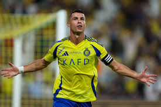
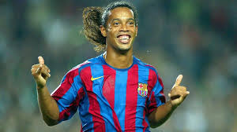
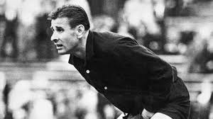
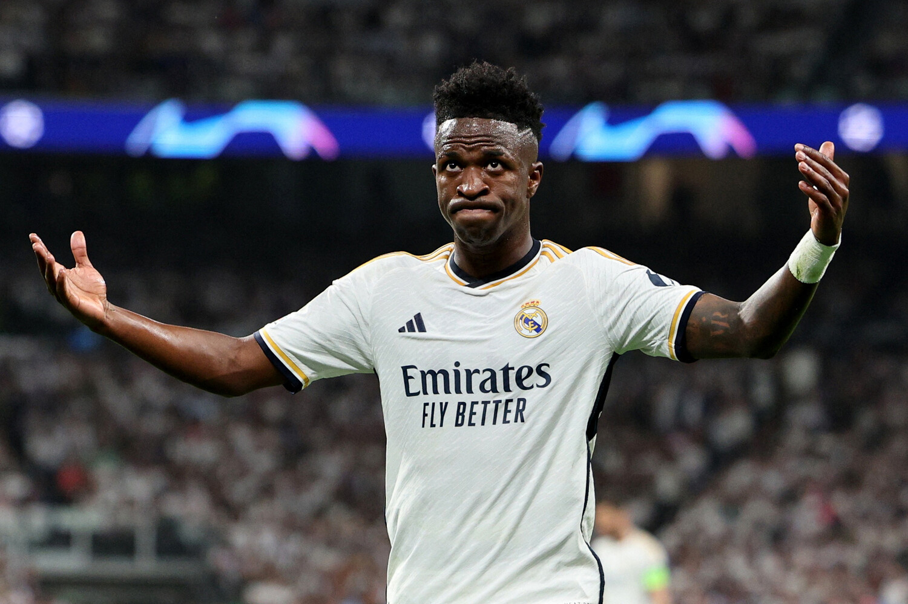

Эрлинг Холанн родился в Лидсе в 2000 году.
Его отец — Альф-Инге Холанн, бывший игрок «Лидс Юнайтед» — команды,
болельщиком которой является Холанн-младший[5][6] — и «Манчестер Сити».
В 2006 году в пять лет установил мировой рекорд в своей возрастной
категории по прыжкам в длину, зафиксировав дистанцию 1,63 метра[7].
Когда Холанну было три года, семья вернулась на историческую родину.
Отец завершил карьеру игрока и сосредоточился на воспитании сына.
Тот поступил в академию «Брюне» из одноимённого города, в котором
они купили дом[8][9]. Параллельно отец проводил индивидуальные
занятия с сыном, а также нанимал тренеров. Все это позволило Холанну
стать на голову сильнее своих сверстников[10]. В сезоне 2015/16 в
возрасте 14 лет он уже успешно выступал за молодёжную команду,
забив 18 голов в 14 играх[11].

Криштиа́ну Рона́лду душ Са́нтуш Аве́йру — португальский футболист,
нападающий и капитан саудовского клуба «Ан-Наср» и сборной Португалии.
Чемпион Европы, пятикратный победитель Лиги чемпионов УЕФА.
Считается одним из лучших футболистов всех времён.

Лионе́ль Андре́с Ме́сси Куччитти́ни — аргентинский футболист,
нападающий и капитан клуба MLS «Интер Майами», капитан сборной Аргентины.
Чемпион мира, двукратный обладатель Кубка Америки, олимпийский чемпион.
Считается одним из лучших футболистов всех времён.

рона́лду ди Аси́с Море́йра, более известный как Роналди́ньо
и Роналди́ньо Гау́шо — бразильский футболист, выступавший на позиции атакующего полузащитника и нападающего.
Считается одним из величайших футболистов всех времён,
завоевал две награды «Лучший игрок года» и «Золотой мяч» ФИФА.

Килиа́н Мбаппе́ Лотте́н — французский футболист,
нападающий клуба «Реал Мадрид» и капитан сборной Франции.
Признаётся одним из лучших игроков мира. Чемпион мира и
лучший молодой игрок чемпионата мира 2018.
На чемпионате мира 2022 года стал лучшим бомбардиром

Лев Ива́нович Я́шин — советский футболист, вратарь.
Олимпийский чемпион 1956 года и чемпион Европы 1960 года,
пятикратный чемпион СССР, трёхкратный обладатель Кубка СССР.
Заслуженный мастер спорта СССР, Герой Социалистического Труда,
кавалер двух орденов Ленина.

-Винисиус Хосе Пайсан де Оливейра Жуниор,
более известный как Винисиус Жуниор или Вини-младший,
— бразильский профессиональный футболист, нападающий клуба Ла Лиги «Реал Мадрид»
и национальной сборной Бразилии. Считающийся одним из лучших игроков в мире,
он известен своей скоростью и навыками дриблинга.